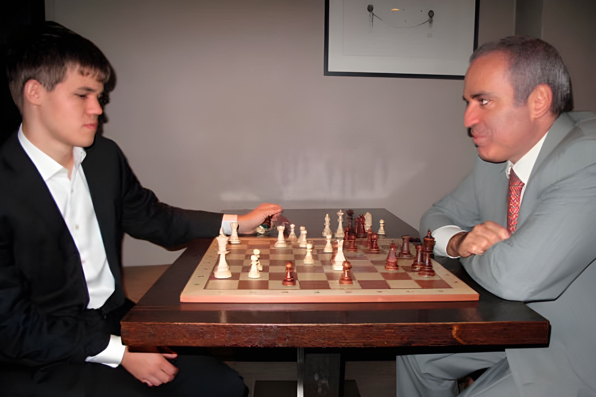
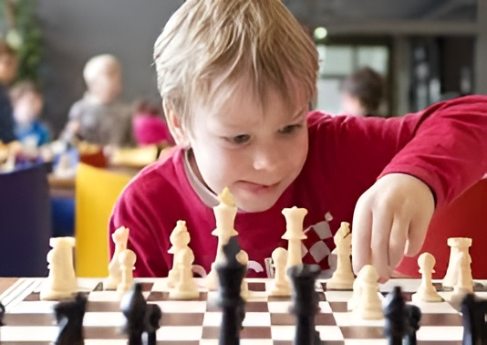
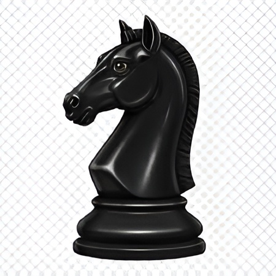
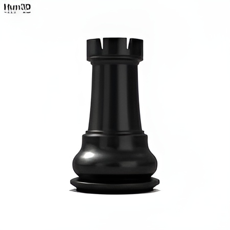
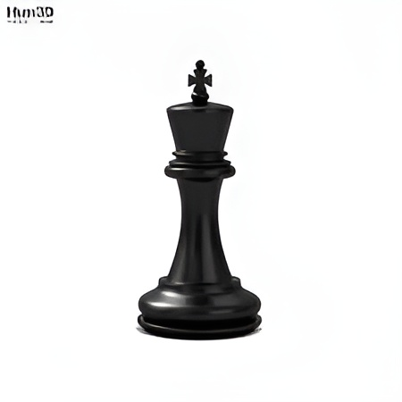

Пешка
Пешка ходит вперед на 1 клетку (в начале может на 2). Бьёт по диагонали.

Шахматы развивают память, логику, стратегию и концентрацию. Мозг тренируется как мышца: чем чаще думаешь — тем лучше работает.

Память становится лучше, потому что игрок запоминает ходы и ошибки.

Шахматы помогают детям лучше читать и быстрее понимать информацию.

Игра учит планировать и принимать решения.
Развиваются навыки общения через турниры и игру с другими людьми.
Постоянная тренировка мозга снижает риск проблем с памятью в будущем.

В шахматах 6 типов фигур: король, ферзь, ладья, слон, конь и пешка.
Пешка ходит вперед на 1 клетку (в начале может на 2). Бьёт по диагонали.
Конь ходит буквой "Г". Единственная фигура, которая может перепрыгивать через другие.

Слон ходит по диагонали на любое расстояние, но не может перепрыгивать фигуры.

Ладья ходит по вертикали и горизонтали. Очень сильная фигура в конце партии.

Ферзь объединяет ходы ладьи и слона. Самая сильная фигура.

Главная фигура. Ходит на 1 клетку в любом направлении. Если король получил мат — игра закончена.

Скачай приложение или купи доску.
Chess.comВыучи ходы фигур.
ВидеоСыграй первую партию.
Попробуй выиграть у компьютера на легком уровне.
| Место | Игрок | Очки | Победы / Ничьи / Поражения | ||
|---|---|---|---|---|---|
| 1 | Каспаров | 7.5 | 5 | 2 | 1 |
| 2 | Карпов | 6 | 4 | 2 | 2 |
| 3 | Фишер | 5.5 | 3 | 3 | 2 |